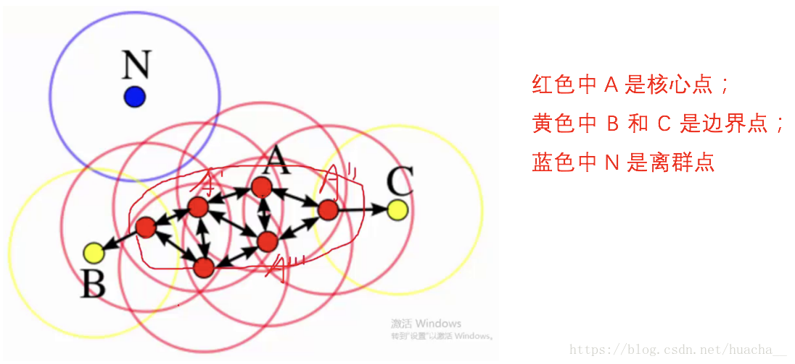

算法介绍
DBSCAN（Density-Based Spatial Clustering of Applications with Noise，具有噪声的基于密度的聚类方法）是一种基于密度的空间聚类算法。 该算法将具有足够密度的区域划分为簇，并在具有噪声的空间数据库中发现任意形状的簇，它将簇定义为密度相连的点的最大集合。与KMeans算法不同，它不需要确定聚类的数量，而是基于数据推测聚类的数目，它能够针对任意形状产生聚类。
DBSCAN算法需要首先确定两个参数：
1， Eps:在一个点周围邻近区域的半径
2， MinPts:邻近区域内至少包含点的个数
DBSCAN算法将数据点分为三类：
1.核心点：在半径Eps内含有超过MinPts数目的点。
2.边界点：在半径Eps内点的数量小于MinPts,但是落在核心点的邻域内的点。
3.噪音点：既不是核心点也不是边界点的点。

结合2中内容，DBSCAN的一般步骤是：（在已知Eps和MinPts的前提下）
任意选择一个点（既没有指定到一个类也没有特定为外围点），计算它的NBHD(p,epsilon)密度空间判断是否为核心点。如果是，在该点周围建立一个簇，否则，设定为噪音点。 遍历其他点，直到建立一个簇。把directly-reachable的点加入到簇中，接着把density-reachable的点也加进来。如果标记为外围的点被加进来，修改状态为边界点。 重复步骤1和2，直到所有的点满足在簇中（核心点或边界点）或者为噪音点
DBSCAN的主要优点有：
1， 可以对任意形状的稠密数据集进行聚类，相对的，K-Means之类的聚类算法一般只适用于凸数据集。
2， 可以在聚类的同时发现异常点，对数据集中的异常点不敏感。
3， 聚类结果没有偏倚，相对的，K-Means之类的聚类算法初始值对聚类结果有很大影响。